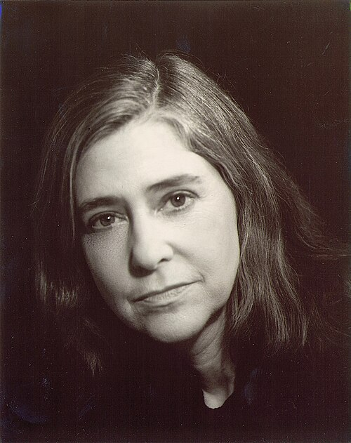
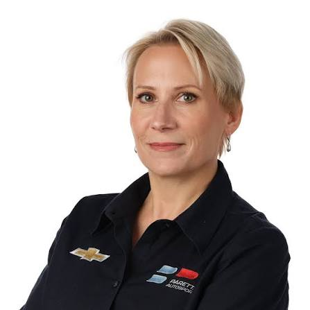
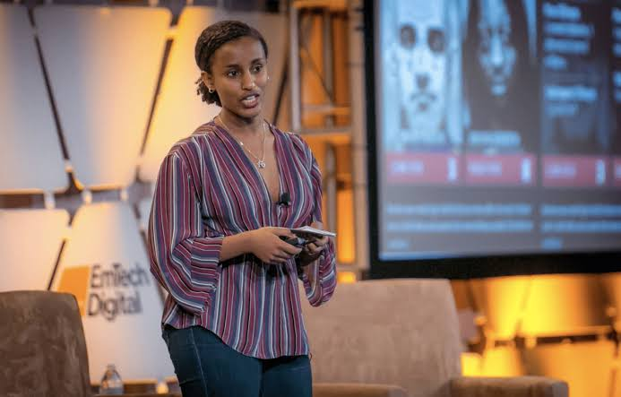

Maddie's Tech Hero
My hidden tech hero that I researched is Margaret Hamilton. She was a computer scientist and software engineer who worked on the Apollo space program and helped develop the software for the Apollo Guidance Computer. Her work was extremely important because the software had to be reliable enough to support astronauts during missions to the moon. Hamilton also helped push software engineering to be taken more seriously as a field. What we find most inspiring about her is that she made such a major ontribution to technology at a time when women were very overlooked in the worlds of computing and engineering. Her work had a huge impact on space exploration and she continues to be a role model for all people interested in computer science and software engineering today. Find out more here!

Yuthika's Tech Hero
Beth Paretta is an American motorsport executive and the founder of Paretta Autosport, a women-forward racing team that competed in the Indy 500. Her goal was not only to support Female drivers but also to create opportunities for women in engineering, mechanics, strategy, operations, and other technical roles within motorsport. She also co-founded Women in Motorsports North America, an organization that helps women build careers in motorsport through mentorship, education, networking, and other professional opportunities. Her work challenges the gender imbalance that continues to exist in racing and other automotive industries. I chose Beth Paretta because I am interested in technology and Formula 1. I especially like that her work focuses on creating opportunities for women throughout a racing team, including the technical roles that often happen behind the scenes. Find out more here!

Niree's Tech Hero
Rediet Abebe is an Ethiopian computer scientist who uses technology to work on real social problems, especially inequality and access to opportunities. What stood out to us is that her work is not just about building better algorithms, but also about thinking about who technology actually helps and who can get left out. She became the first Black woman to earn a PhD in computer science at Cornell and later helped co-found Black in AI, which supports Black researchers and works toward better representation in the field. We chose her as our Tech Hero because her story shows how someone can use their own experiences and background to push technology in a more fair and inclusive direction. Find out here!